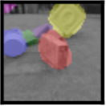

|
Junkeun Yi I am a master's student at UC Berkeley, where I work on computer vision and machine learning. Previously, I did my undergraduate studies at UC Berkeley, where I studied computer science. |

|
ResearchI'm interested in computer vision, especially in creating models that can reason about a scene through domains outside of its main downstream task. Currently, I am working on transformer models for video with the aim for publishing at a major AI conference. |
PersonalI've lived in 6 different countries (Korea, New Zealand, Japan, Turkey, Pakistan and the US)! Also, I love spicy food! |
Projects |
|

|
PyTorch reimplementation of Slot Attention for Video (SAVi)
Originally by Google Personal Project, 2022 code PyTorch remiplementation of SAVi, an unsupervised / weakly supervised video model that learns representations of objects separate from each other and the background through slot attention. Original code by Google written in Jax. |
|
|
Uncertainty-Weighted-Distillation
Class Project, 2022 code PyTorch implementation of Policy Distillation with exploration by Random Network Distillation. The model learns to distill an expert PPO policy into a smaller student network while also taking exploration steps through trying to fit a randomly initialized network. |
 |
Computational Photography Algorithms
Class Project, 2022 Alignment / Filtering & Frequencies / Morphing & Collection Modeling / Stitching & Mosaics / Keypoint Detection / Aperture & Style Transfer Python implementations of various computational photography algorithms |
|
|
RookieDB: a Java SQL database
Class Project, 2021 Java implementation of a SQL database with querying, indexing, joins, query optmization, concurrency, and recovery capabilities. |
|
|
PintOS: a C Operation System
Class Project, 2019 C implementation of an Operating System with multi-threading, scheduling, synchronization, and file system capabilities. |
Education |
|
Univeristy of California, Berkeley
Elec Eng and Computer Science MS, 2024 Computer Science BA, 2022 CS170: Efficient Algorithms and Intractable Problems CS189: Introduction to Machine Learning> CS162: Operating Systems and Systems Programming CS285: Deep Reinforcement Learning CS186: Introduction to Database Systems CS288: Natural Language Processing CS294-82: Experimental Design for Machine Learning EECS227: Optimization Models CS294-196: Responsible GenAI and Decentralized Intelligence |
Experience |
 |
Berkeley AI Research Lab (BAIR)
Advisor: Professor Trevor Darrell Master's Student, 2023-2024 Undergraduate Researcher, 2021-2023 Working on publication for video transformer model. Implemented SAVi for PyTorch, and unsupervised video object understanding model. |
|
Republic of Korea Army
Enlisted Soldier, 2019-2022 Enlisted soldier (PV2 - SGT) in KATUSA program. Performed English-Korean translation/interpretation and manned computing devices. |
|
|
Pivotal Software Inc.
Sofware Engineering Intern, 2019 Open-Source contribution to the Greenplum Database (Postgres-based SQL database), adding backup utility and command-line interface features and fixing bugs. Wrote pipeline for incremental changes between a database and its remote backup using Write-Ahead Log streaming, incorporating Kafka as a streaming medium and programmed consistency points for source-to-backup consistency. slides |
|
|
Berkeley Networked Systems Lab (NetSys)
Undergraduate Researcher, 2018-2019 Contributed in writing AWS Kubernetes elastic cluster contorller using Kubernetes Go-client, Metrics-Server client, and the Prometheus API for resource management. |
|
website template from Jon Barron. |